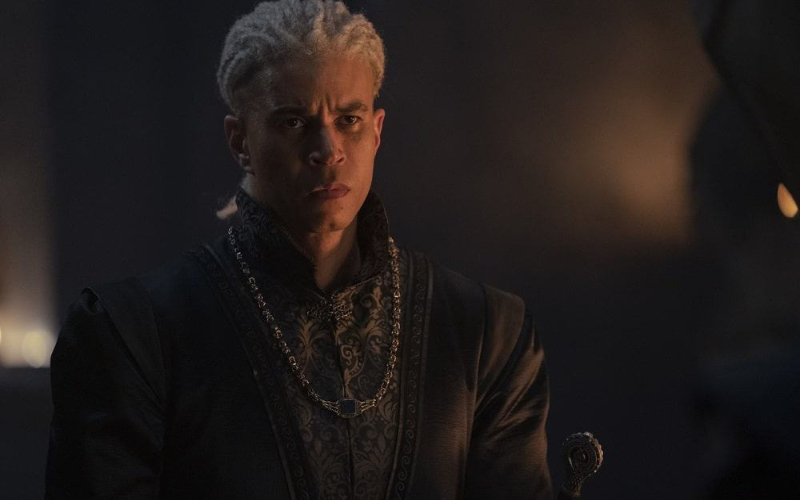

House of the Dragon: Inicia as Filmagens Para a Segunda Temporada no Reino Unido
Uma das maiores surpresas e discussões entre os fãs de Game of Thrones e admiradores da obra de George R.R. Martin é a possibilidade de Laenor Velaryon retornar na série House of the Dragons, mesmo tendo sua morte confirmada nos livros. Essa especulação tem gerado entusiasmo e teorias entre os espectadores ansiosos pela nova produção.
Nos livros, Laenor Velaryon, um membro da poderosa Casa Velaryon, é um personagem importante que acaba encontrando um fim trágico. Porém, como acontece frequentemente em adaptações para a televisão, é comum que elementos sejam modificados ou reimaginados para se adequarem à narrativa da série.
Considerando que House of the Dragons se passará séculos antes dos eventos de Game of Thrones, há espaço para mudanças e desenvolvimentos inesperados na trama. A produção pode optar por trazer Laenor Velaryon de volta à vida, seja como uma reviravolta surpreendente, uma reinterpretação do personagem ou mesmo através de flashbacks que explorem seu passado.
AEssa possível ressurreição ou reintrodução de Laenor Velaryon abriria um leque de oportunidades narrativas, permitindo explorar seu relacionamento com outros personagens-chave da série, bem como seus possíveis envolvimentos políticos e intrigas familiares. Além disso, traria uma nova camada de mistério e emoção para os espectadores que já estão familiarizados com o universo de Westeros.
É importante lembrar que qualquer especulação sobre o retorno de Laenor Velaryon em House of the Dragons é baseada em suposições e possibilidades. A produção pode seguir fielmente a história dos livros ou fazer escolhas criativas distintas. No entanto, a discussão em torno desse tópico ilustra a empolgação dos fãs e o desejo de ver personagens conhecidos ou mencionados na saga sendo trazidos à vida novamente.
Independentemente das decisões tomadas pelos roteiristas e produtores, House of the Dragons promete ser uma série fascinante que explorará os eventos que levaram à ascensão e à queda da Casa Targaryen. Com ou sem o retorno de Laenor Velaryon, os fãs podem esperar uma história envolvente, cheia de intriga, drama e, é claro, a presença imponente dos dragões que tanto encantam o público.
Quem Somos
Somos uma equipe apaixonada por séries, trazendo resenhas envolventes, notícias atualizadas e curiosidades dos bastidores. Nosso objetivo é fornecer aos fãs um espaço dedicado a explorar e compartilhar o fascinante mundo das séries, oferecendo insights, análises e entretenimento para todos os amantes da tela pequena
Últimas notícias


Últimas Resenhas


Curiosidades